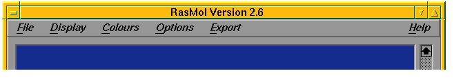
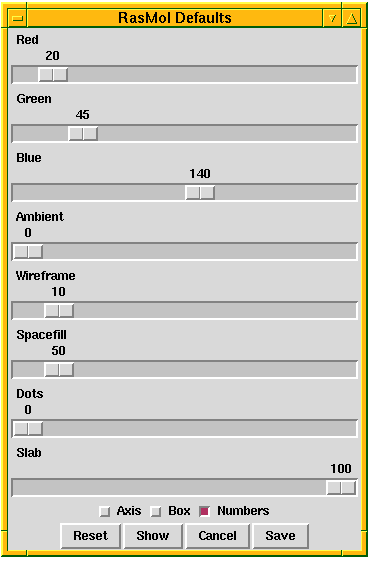
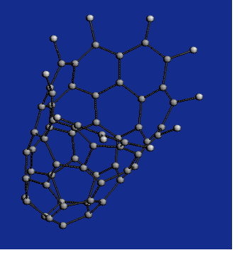
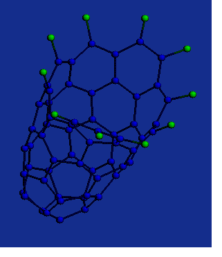

Up : Main
Prev : Generation programs
Next : Codes
CaGe V0.3
RasMol
RasMol
is an external program which is very useful for displaying three--dimensional
representations of graphs.
There are three way to use the various options of RasMol:
RasMol Menu:

RasMol defaults:
At the bottom of the "Output panel"--window you can find the "RasMol defaults"--button.
Pressing it opens the "RasMol Defaults"--window:

CaGe is able to store some default values for RasMol e.g background color.
The values are stored for each generation program seperatly !
Choose some values by the slides and the checkbuttons. Use the "Show"--button to
send these values to RasMol. You can save the new default values or load the old
values with the "Reset"--button.
Command Line Interface:You can use all
options and commands of RasMol via the Command Line Interface.
Let us look at one example.
You select the HCgen generation program and choose 60 C-Atoms 10 H-Atoms
and 5 Pentagons. In your xterm the following lines will appear :
bash$ cage
Welcome to CaGe V0.3
Please wait. In a few seconds the frame of the
main window will appear.
RasMol Molecular Renderer
Roger Sayle, August 1995
Version 2.6
[8bit version]
RasMol> rasmol
->HCgen 60 10 5 gap 4 stdout pid
C: 60 H: 10 hexagons: 21 pentagons: 5
Randlaenge: 19 Innere Knoten: 41
Bisher: 0 Strukturen
aufgabe:
v:0 d:1 v:0 d:0
Anfang konstruktion: C: 25 H: 7
Bisher: 10 Strukturen
aufgabe:
v:0 d:0
Anfang konstruktion: C: 41 H: 9
83 Strukturen
Total generation time: 0.2 seconds
Now you press "Return" and the Command Line Interface is active.
This is indecated by:
RasMol>
You can use the Command Line Interface every time after a new graph
arrived. For more details see
RasMol Manual
Before:

After:
RasMol> set hydrogen true
RasMol> select hydrogen
10 atoms selected!
RasMol> color [0,255,0]
RasMol> select not hydrogen
60 atoms selected!
RasMol> color [0,0,255]
RasMol>
